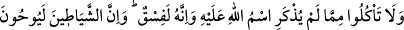
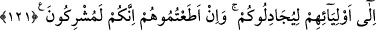

Rab’lerinden perdelenmişlerdir.” (el-Mutaffifîn, 83/15) et-Te’vîlâtü’n-necmiyye’de
böyle geçmektedir.
Bil ki âsîler, ilâhî irade karşında tehlikededirler. Hattâ itâatkarlar bile sonlarının nasıl
olacağını bilmezler. Ey âsî! Aldanma; çünkü Allah’ın inâyeti her âsîye ulaşmaz. Sen,
Allah’ın affetmeyi murad ettiği kişilerden olup olmadığını bilemezsin. Çünkü işin
başında afvolunanlar pek azdır.
Mâlik b. Dînar’ın şöyle dediği nakledilmiştir: Bir gün Basra sokaklarında cenaze
taşıyan bir topluluğa rastladım. Ama cenazenin etrâfında onu teşyî eden kimse yoktu.
Sebebini sordum. Onun büyük günahkârlardan birisi olduğunu söylediler. Onun cenaze
namazına, cenazenin kabre konulmasına iştirak ettim. Sonra bir gölgeye çekildim ve
uyudum.
Rüyamda gökten iki melek indiğini gördüm. Adamın kabrini açtılar. Meleklerden biri
kabre indi ve arkadaşına: “Onu cehennemlikler arasına kaydet. Mâsıyet ve günaha
bulaşmamış azası kalmamış” dedi. Diğeri: “Acele etme, araştır bakalım. Gözleriyle
işlediği hayırlı bir ameli yok mu?” dedi. Melek: “Gözlerini yokladım, onları Allah’ın
haram kıldıklarına nazarla doldurmuş.” dedi. Diğeri: “Kulaklarını yokla.” dedi. Melek:
“Kulaklarını yokladım, fuhşiyat ve münkeratı dinlemekle doldurmuş.” dedi. Diğeri:
“Dilini yokla.” dedi. Melek: “Yokladım, dilini de mahzurlu sözlerde ve haram işlemek
için kullanmış.” dedi. Diğeri: “Ellerini yokla.” dedi. Melek: “Yokladım, onları da
haramları tutmakta, helâl olmayan şehvet ve lezzetlerle doldurmuş.” dedi. Diğeri: “Bir
de ayaklarını yokla.” dedi. Melek: “Onları da yokladım, ayakları da hep pisliklere ve
günah olan yerlere gitmekle dolu.” dedi. Bunun üzerine kabrin dışında duran melek:
“Kardeşim, onun için acele etme. Bir de ben ineyim bakayım dedi ve kabre indi. O
şahsın kabrinde bir süre kaldı. Sonunda şöyle dedi: “Kardeşim, ben onun kalbini
yokladım. Kalbinin îmanla dolu olduğunu gördüm. Onu, Allah’ın rahmetine nail olan,
saîdlerin arasına yaz. Allah’ın lütfu onun işlediği tüm günah ve hataları örter.”
Sa’dî (k.s.) der ki:
Son nefesin güzel olursa eğer
Matem anın düğün gününe döner
Allah’ım, Fatıma ve çocukları hakkı için
Son nefesimi imanla vereyim
Eğer ruhunu îmanla teslim edersen bil ki, öldüğün gün senin en mutlu, en sevinçli
günündür. Allah’dan afvını ve bağışlamasını niyâz ederiz.